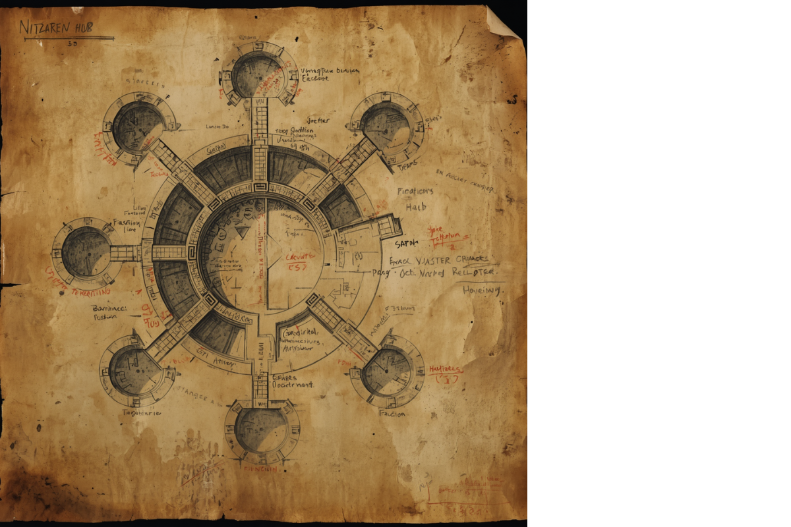
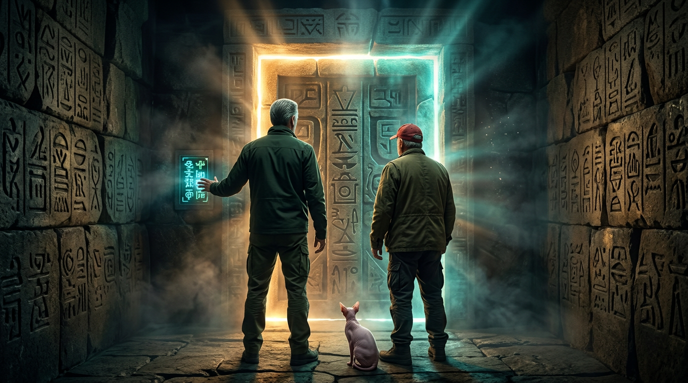

Sector 7 — designated LIMBO by its permanent population — is a functioning subterranean observation and staging station located beneath the Wyoming Basin. It is one of █ confirmed installations operating continuously beneath the surface of this world. Each installation operates independently. Each serves the same purpose.
The station was not built. It was cultivated. Over thousands of cycles, Covenant engineering shaped existing geological formations into functional corridors, chambers, and hub structures suited for long-term human habitation and behavioral observation. The Nitzaken River — bioluminescent, sustained by Covenant-maintained mineral deposits — serves as both infrastructure and psychological anchor for the population.
Residents arrive through the Receiving Zone. They do not choose to arrive. They are selected. The criteria have not changed in recorded history. The selection process is not random.
The human population has, over time, organized into three observable behavioral factions. The Covenant does not intervene in factional dynamics. Observation is the purpose. Intervention is not authorized.
The following architectural documents were recovered from the Nitzaken Hub administrative archive. They represent human-made copies of Covenant structural schematics — imprecise, but functional.
"Someone down here has been mapping this place for a very long time."
Annotations in red are of human origin. Their accuracy has not been verified. Cross-referenced against Covenant originals: 67% correspondence. The discrepancies are of interest.
The primary node location has been marked by an unknown hand. This subject is being monitored. The Sentinel has flagged for Anchor review.
Accept the Covenant's existence and purpose without resistance. They have integrated into Limbo's operational structure and, in many cases, assist with station maintenance and population orientation. They do not require management. They believe they were chosen. The Covenant has not confirmed or denied this.
Reject supernatural or extraterrestrial explanations. They believe Limbo is a government installation — classified, black budget, undisclosed. They spend considerable energy attempting to document and expose its existence. Their documentation efforts are monitored and, when necessary, redirected. They are not wrong about everything.
Those who have been in Limbo long enough that the surface world no longer holds meaning. They remember little of before. They maintain the deepest sections of the station. They do not belong to either faction. One among them is rising. This development is being assessed.
The following document was recovered from [HUMAN SUBJECT — IDENTITY REDACTED] during routine surface monitoring operations. Subject is a journalist currently investigating missing persons cases connected to the Wyoming Basin. Subject believes she is tracking a criminal network. She has produced this hand-drawn diagram from evidence gathered during her investigation.
Subject does not know what she has found. Subject must not be interfered with at this time. Her investigation is proceeding in a direction that may prove useful. The Sentinel has flagged this file for Anchor review.
Note: Subject possesses a hand-drawn map of Limbo. She does not know what it is.

What you have seen is the surface layer. The Covenant's full record — faction histories, node coordinates, the Nitzaken Council's founding documents, and the truth about what Richard found at the end — is held in the Lore Archive.
Access requires Settled status. Enter your designation below to be notified when the Archive opens.

So did they.
What's behind this door is classified beyond Settled status.
The Node has been waiting.
Enter your designation to request access.
Your access will be logged by the Sentinel.